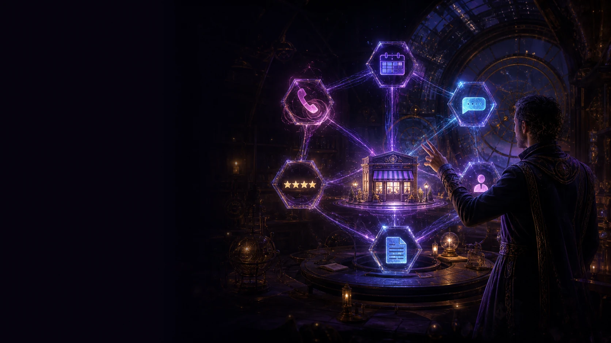

A focused page can be art-directed to the hilt. A large site can stay clean and restrained. SiteSourcery keeps footprint and creative ambition independent.
Footprint
What the website must hold
01Card
02Card Plus
03Site
04Site Plus
05Signature
06Flagship
07Scale
Creative direction 01
Essential
Quiet confidence. Strong hierarchy. Nothing decorative without a job.
Creative direction 02
Distinctive
A recognizable visual voice with richer rhythm, detail, and interaction.
Creative direction 03
Atelier
Art direction as a full experience—cinematic, authored, and impossible to mistake.
Abracadabra
Your business. Your hands on the wand.
The interface asks for what matters, shows the consequence of every choice, and keeps the page visible while you shape it.
01Start with real factsName, audience, purpose, offer, and next action.
02See every changePhone and desktop stay in view as the page develops.
03Leave with controlPublishing, domains, support, and exit are part of the product.
Abracadabra · local product simulationFictional data · not published
Step 2 of 4 · Shape it
Choose the feeling.
Business nameJuniper & Stone
Main actionPlan a visit
iFictional example used only to test the interface.
Local preview · juniper-and-stone
Juniper & Stone
Millville · New Jersey
A slower kind of Saturday.
Plants, pottery, and small-batch objects chosen to make a room feel lived in.
Plan a visit
J
J&S
A slower kind of Saturday.
Plan a visit
Step 3 of 4 · Review
Check the page before anything changes outside this canvas.
Business
Juniper & Stone
Direction
Warm
Main action
Plan a visit
Publication
None — this is a local fictional simulation.
This review state demonstrates the product decision point. It does not create an account, reserve an address, or publish a site.

Working systems · Hive
Let the routine work remember itself.
Hive maps the handoffs a busy business keeps dropping—then shows where the system acts, where a person takes over, and how everything stops safely.
Ready-made: After-HoursCommission a system for my business
After-Hours · local demonstration
A clear handoff after closing time.
Ready to demonstrate
01
A sample inquiry arrivesThe fictional business has already closed.
02
The approved reply is simulatedOnly the accepted message and channel are shown.
03
The handoff is preparedContext, status, and the next human action stay together.
04
A local receipt is writtenWhat happened, what did not, and when the demonstration ended.
Demonstration receiptFour local steps completed. Zero outside messages sent.
No outside message is sent. The sequence exists only in this browser tab.
Services
Keep the whole digital place working as one.
Choose the exact job—from the address in the browser to the tools and care behind it—without buying work you do not need.
Every proof item says exactly what it is: live work, founder-authorized work, or a demonstration. This canvas uses SiteSourcery-specific visual studies only.
Visual direction studyThe digital storefrontSiteSourcery brand world · not a client outcomeCustom demonstrationOne system across screens
Product interaction
Interface states that explain themselves.
ReadyPausedNeeds attention
The visual language
Editorial wonder. Product precision.
The brand can feel magical without asking a buyer to decode fantasy language. Wonder lives in the art direction; decisions stay plain.
Display
AaMake it memorable.
Noto Serif Display · editorial scale